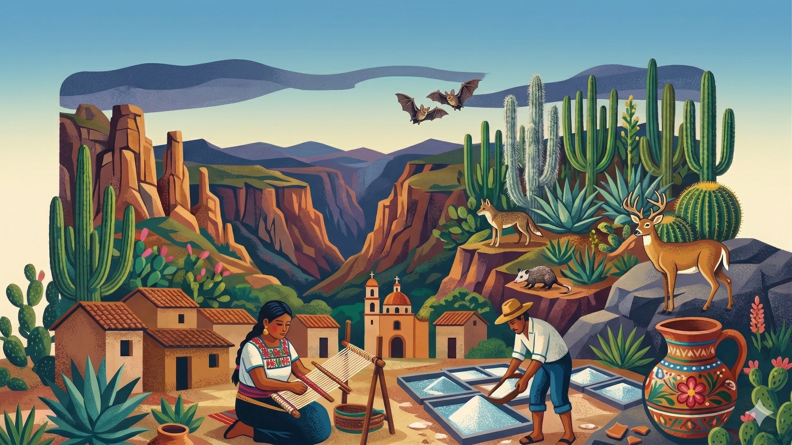

PATRIMONIO BIOCULTURAL
PATRIMONIO BIOCULTURAL
PATRIMONIO BIOCULTURAL
PATRIMONIO BIOCULTURAL

Descubre el legado vivo de la Mixteca Poblana y el Valle de Tehuacán a través de sus historias, su gente y su tierra.
Un paisaje dominado por cerros escarpados, planicies secas que albergan ecosistemas resilientes y cañadas milenarias. Es el centro de diversidad de cactáceas columnares más importante del continente, resguardando un legado de siglos de erosión y resistencia natural.


Descubre una selección de documentales y materiales audiovisuales realizados por distintos creadores que ayudan a mostrar la riqueza natural, cultural e histórica de la reserva.
Estos videos funcionan como contenido de referencia e inspiración para conocer más sobre el territorio y las historias que lo rodean.
► Ver en YouTube